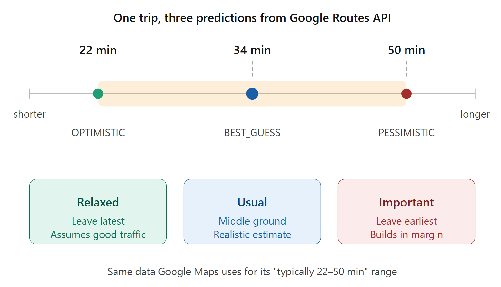
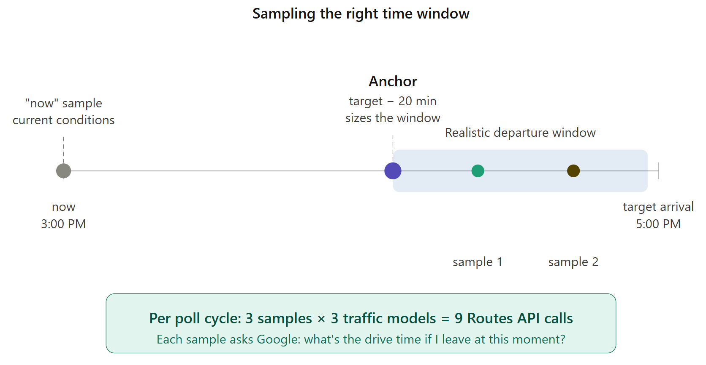

It works out the latest time you can leave and still arrive on time
Google Maps shows how long the drive takes if you leave now and a range like
"typically 22 to 50 min". It does not tell you when to leave. This app takes
an origin, a destination and an arrival time, asks Google's Routes API how
long the drive will take at departure times inside your likely window, and
counts down to the latest safe departure for three risk levels. It keeps
polling while you get ready and sends a browser notification when it is time
to go.
UCLA to LAX Terminal 7, arriving 6:45 PM with a 5-minute buffer. Relaxed
expects a 24-minute drive and Important expects 61 minutes, so the
leave-by times are 37 minutes apart.
37 min
Gap between the Relaxed and Important leave-by times on that trip. The
size of the gap tells you how unpredictable the route is.
3
Risk levels, each one of Google's trafficModel values:
optimistic, best guess, pessimistic.
9
Routes API calls per poll: three departure times, each queried with all
three traffic models.
15 / 8 / 3
Minutes between polls when departure is more than 60, 30 to 60, and
under 30 minutes away.
Readout
Three traffic models, three leave-by times
The risk levels come from Google. The Routes API has a
trafficModel parameter with three values, and the app sends the
same route request once with each. The spread between the three answers is
the same "typically X to Y min" range the Maps app shows; the API returns
each end of it as a number.
UCLA to LAX T7Arrive 6:45 PM, buffer 5 min
Mode
trafficModel
Drive
Leave at
Relaxed
OPTIMISTIC
24 min
6:15 PM
Usual
BEST_GUESS
37 min
6:02 PM
Important
PESSIMISTIC
61 min
5:38 PM
Read from the dashboard screenshot above, taken 18 May 2026.
Relaxed is for lunch with a friend who is always late. Important is for a
flight or an interview, and accepts arriving early. Showing all three at once
is deliberate: on a calm route they land within a few minutes of each other
and Relaxed is safe; on the 405 at rush hour they do not.

How the three traffic models map to the three modes, using an illustrative 22 to 50 minute range.
The Routes API ignores trafficModel unless
routingPreference is TRAFFIC_AWARE_OPTIMAL. It
returns no error. You get the same duration for all three models, and it
looks like real data.
The bug that took longest to find
Sampling
It asks about the time you will leave, not the time it is now
The simple version would poll "how long is the drive right now" every few
minutes. At 5:00 PM, for a 6:00 PM departure, that describes the 405 at
5:00, which can be very different from the 405 at 6:00.
So the app samples future departure times. When you press Start it sends one
anchor request for a departure 20 minutes before your arrival target. From
that duration it sets a departure window: it ends at the target minus your
buffer and starts the anchor duration plus 15 minutes earlier. Every poll
then queries two departure times inside the window plus one for right now,
each with all three traffic models, which makes nine calls. If the target is
less than 25 minutes away it skips the window and queries only "now".

One anchor request sizes the window; each poll samples inside it.
Each poll is added to a history table with the low, mean and high durations
and the resulting leave-by time, so you can see whether the recommendation is
still moving.
Build
One file, your own API key
Routing
Google Routes API, three requests per sample with OPTIMISTIC, BEST_GUESS and PESSIMISTIC
Required setting
routingPreference: TRAFFIC_AWARE_OPTIMAL
Call budget
3 calls for the anchor, then up to 9 per poll
Poll cadence
Every 15 min when departure is over 60 min away, 8 min at 30 to 60, 3 min under 30
Alert
Browser notification plus an on-screen alert at the leave-by time
One HTML file, vanilla JavaScript. No server, no build step. Last destination kept in localStorage
Limitations
What it can't do
You need your own Google Maps API key with four APIs enabled, pasted into the
HTML file. It is not a hosted service. The article estimates a poll at about
$0.05 of Routes API usage and a trip at 5 to 15 polls, so 50 cents to a
dollar per trip at May 2026 prices.
The forecast is Google's. If the pessimistic model misses a crash that has
not happened yet, so does the app. It improves the decision about when to
leave, not the traffic prediction.
The layout is built for a desktop browser. Below 1080px the three columns
stack into one long page, with no phone-specific design. It also depends on
a browser tab staying open; a locked phone pauses the JavaScript. It handles
driving only, one destination at a time.
More
The full story
The article covers the
setup steps, the interface choices and the features I would add next:
calendar integration, saved routes, multi-stop trips and transit.